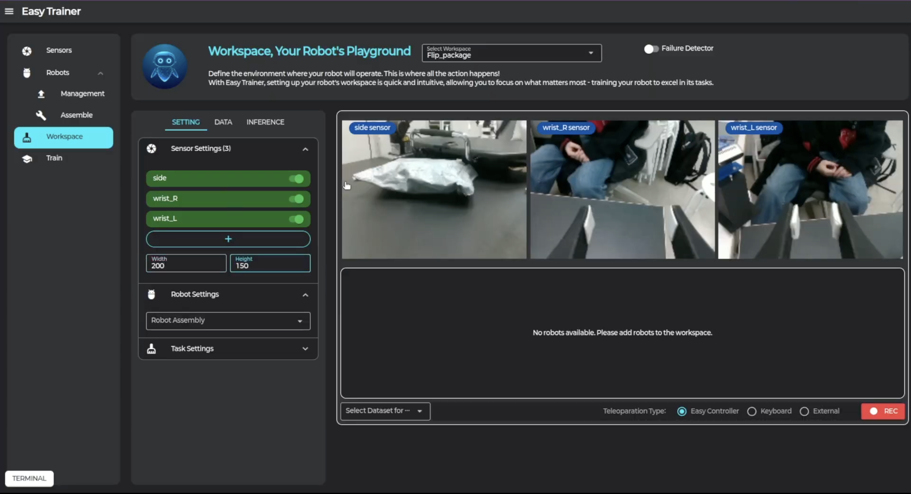
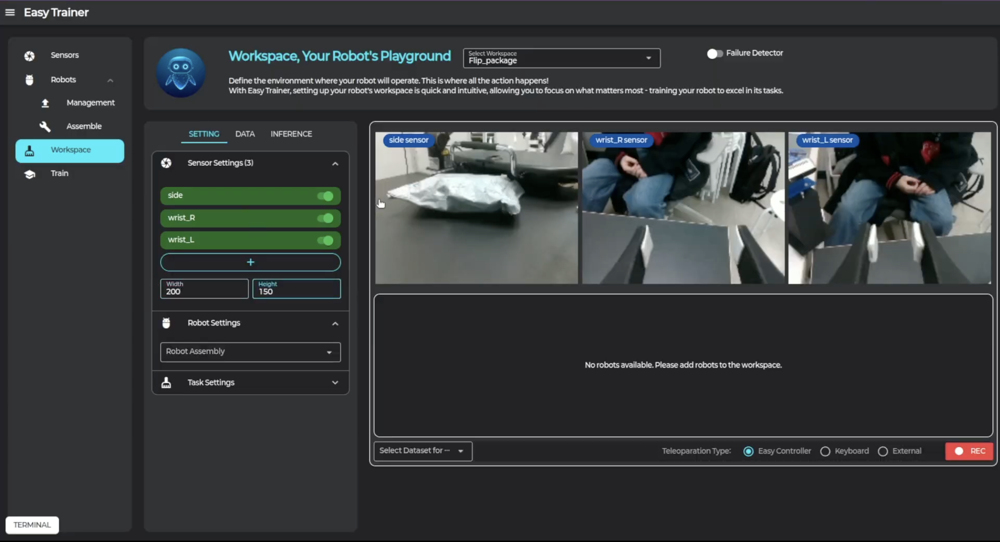
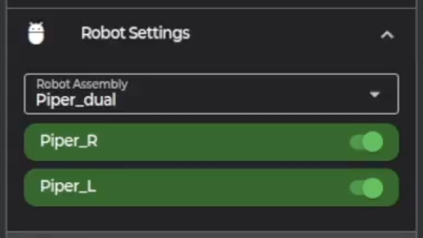
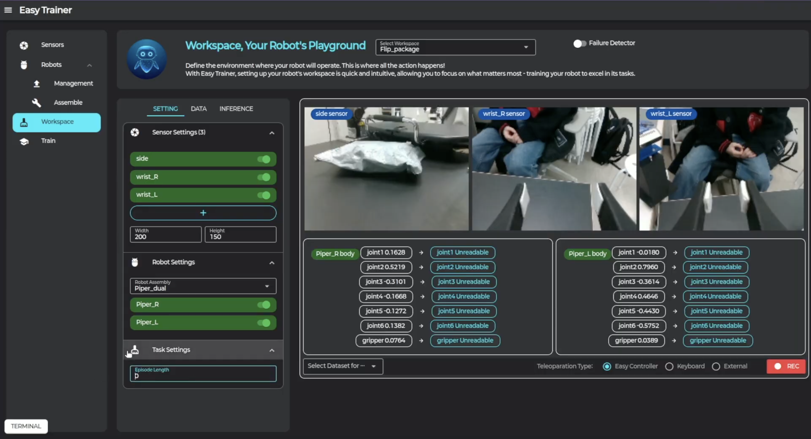
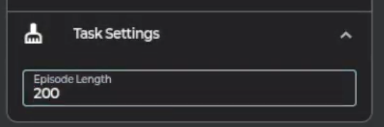
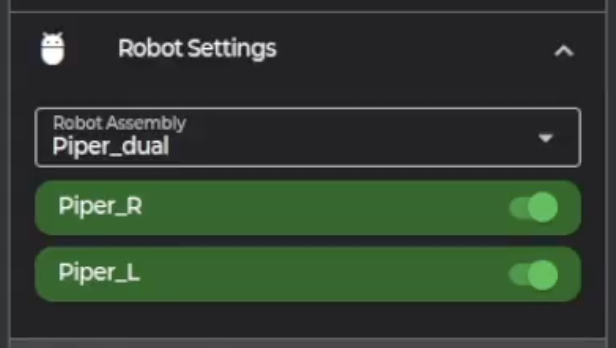
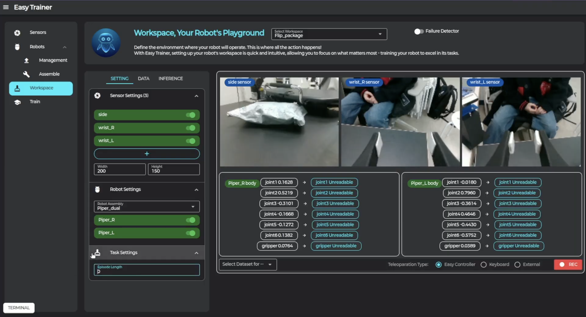
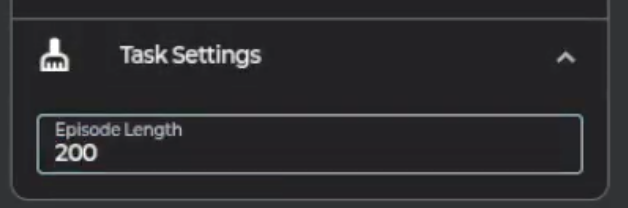

8. Workspace

Workspace 페이지는 로봇에게 시키고 싶은 작업에 대한 페이지입니다.
작업 환경을 설정하고, 데이터를 수집하고, 추론을 통해 직접 일을 시킬 수 있습니다.

 

 





1. Workspace 탭 -> Select Workspace에서 워크스페이스 선택, 혹은 워크스페이스 생성 -> Setting 탭
작업 환경 설정
2. 작업에서 사용하고 싶은 센서 및 화질 선택
3. 작업에서 사용하고 싶은 로봇 어셈블리 선택
4. 작업 데이터의 에피소드 길이 선택